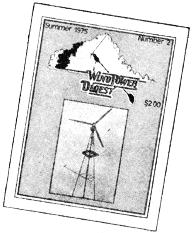

Remember when we first mentioned Wind Power Digest back in MOTHER NO. 32's "Special Windplant Section"? Remember how we noted that WPD's first (and only; at that time) issue contained a veritable wealth of useful information for the serious wind energy enthusiast . . . but that, without more help and support; we feared there might never be an Issue No. 2?
Well, we're glad to say a lot of folks responded to that notice, and thanks largely to them-and their dollars (which is what all struggling infant publications need the most) -Wind Power Digest lives on. Issue No. 2 was published this summer, and it's every bit as good as No. 1.
In fact, WPD No. 2 features photos and evaluations of Comet, Zephyr 7.5 kw, Salter Rte-7000, and Amerenalt I windplants . . . a look at Aero Power's new component blades . . . a review of H.F. McColly and Foster Buck's old 1935 six-volt homebuilt generator plans . . . a special reprint of a 1910 how-to article (complete with schematics!) for building your own old-fashioned water-pumping mills : . . an interview with North Wind Power Company's Don Mayer . . . reports from various groups and individuals researching wind power and its potential . . . plans for a working Dutch windmill replica . . . reader letters offering help, knowledge, equipment, and ideas . . . and (whew!) just too many other features to adequately mention here.
So c'mon, folks: Now we're doubly sure Wind Power Digest is a valuable and outstanding source of wind energy news and know-how. It deserves your support. You can still buy issue Nos. 1 and 2 for $2.00 each, or get 'em both plus the next two numbers-yep, WPD's publishing more or less regularly nowfor a mere six bucks. Send your mosey and encouragements to Mike Evans, Editor, Wind Power Digest, 54468 CR 31, Bristol, Ind. 46507.
|
 |
|
|